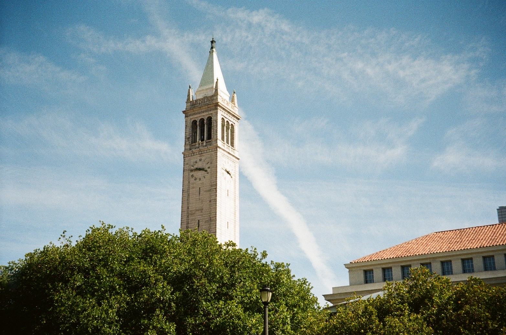
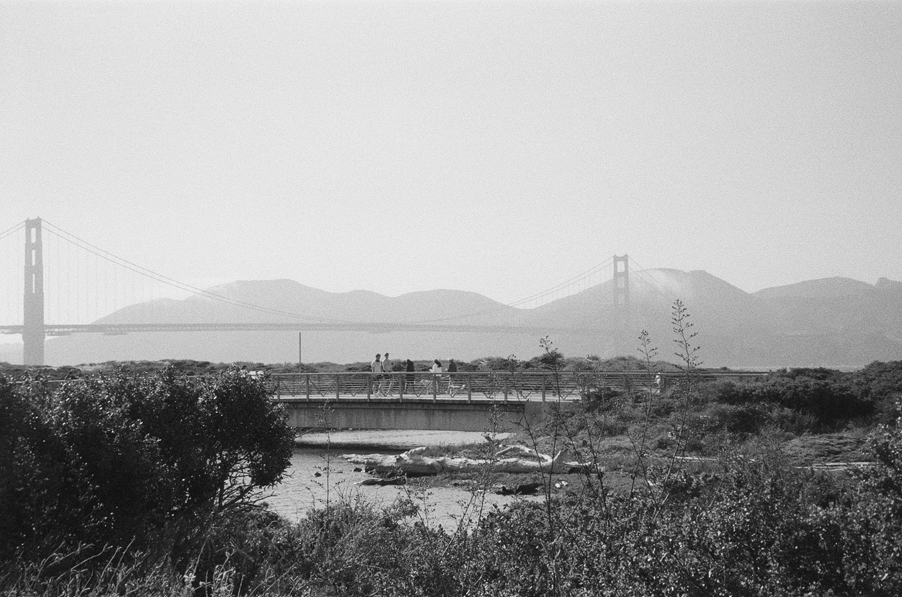
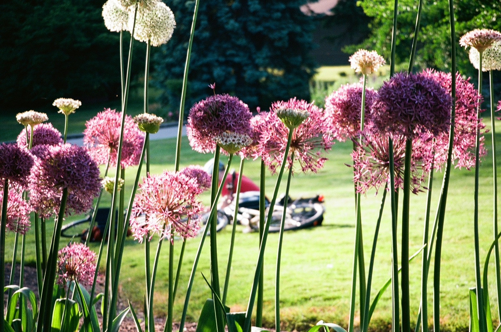
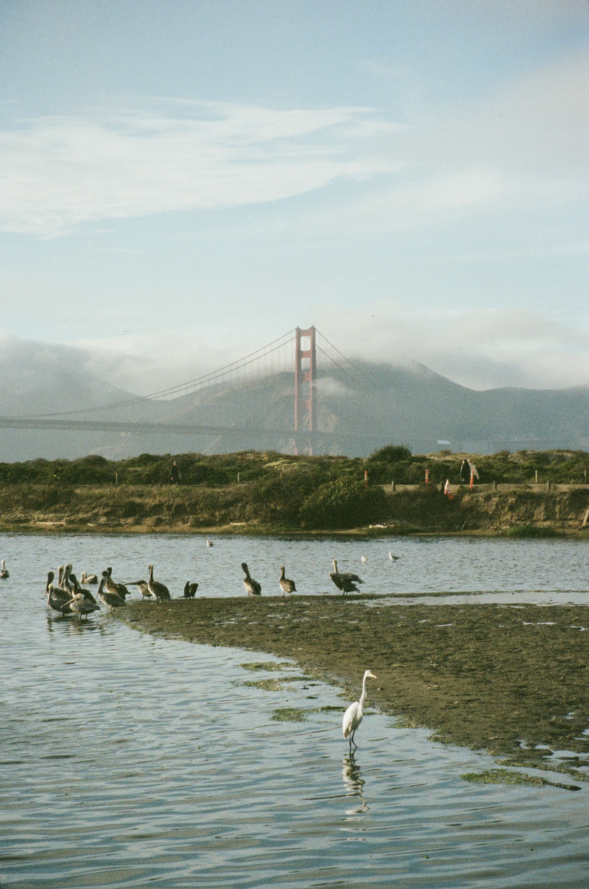
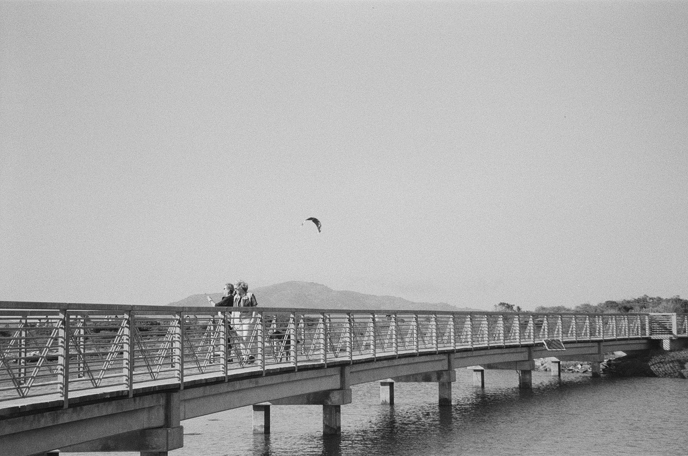
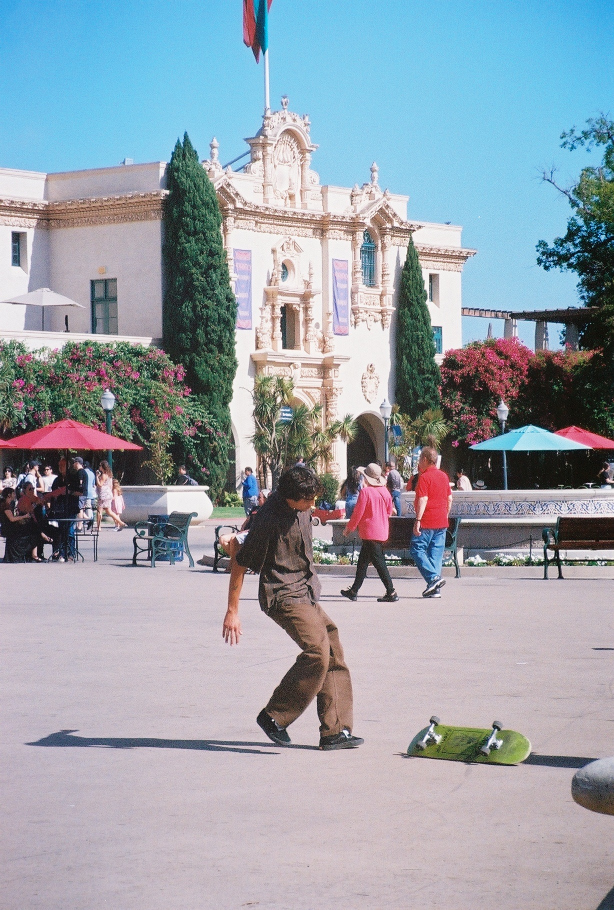
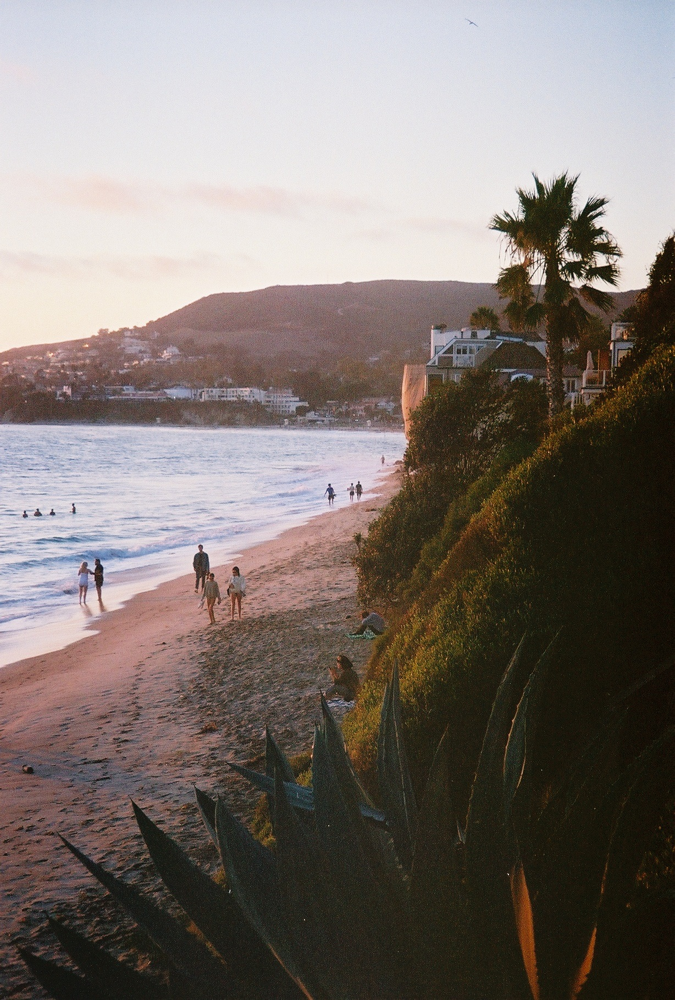
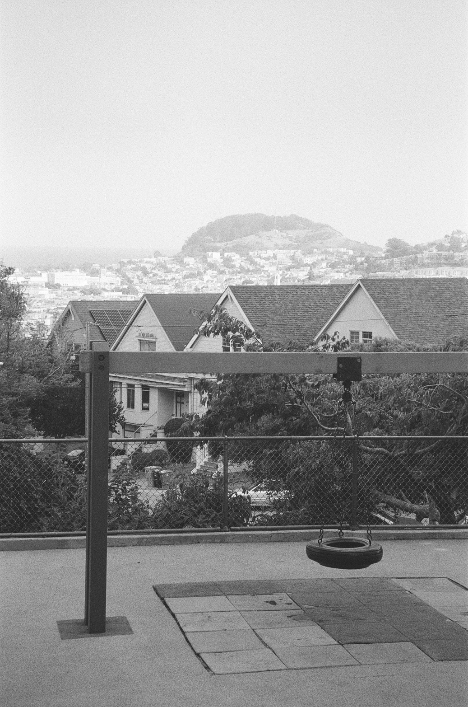
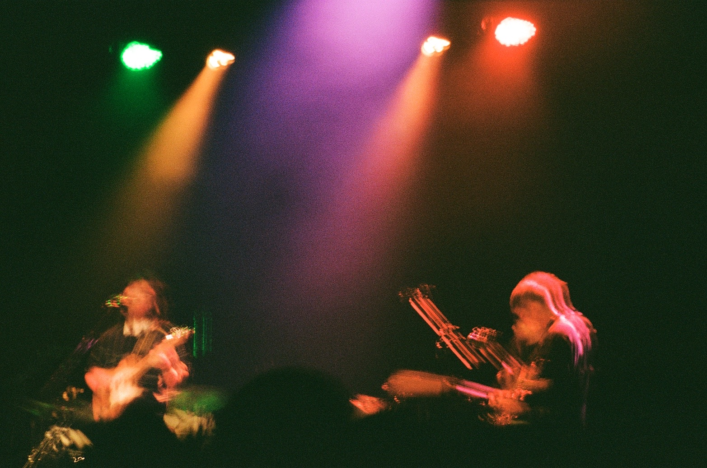

i remember san francisco as fond as when i got my first b&w roll of film developed and recieved this picture. taken at crissy field, my escape from the busy city.

the campanile; a symbol of academic excellence, taken during cal day.

san francisco; a city of contrasts, captured in black and white.

the figure of a biker peeks through a field of dandelions. taken in seattle.

birds resting on a lagoon against the golden gate bridge.

crissy field conversationalists.

candid of a skateboarder in san diego.

laguna beach sunset during my 19th birthday.

a swing overlooking san francisco on an oddly foggy morning.

a sunset rollercoaster performance i attended with my best friend.